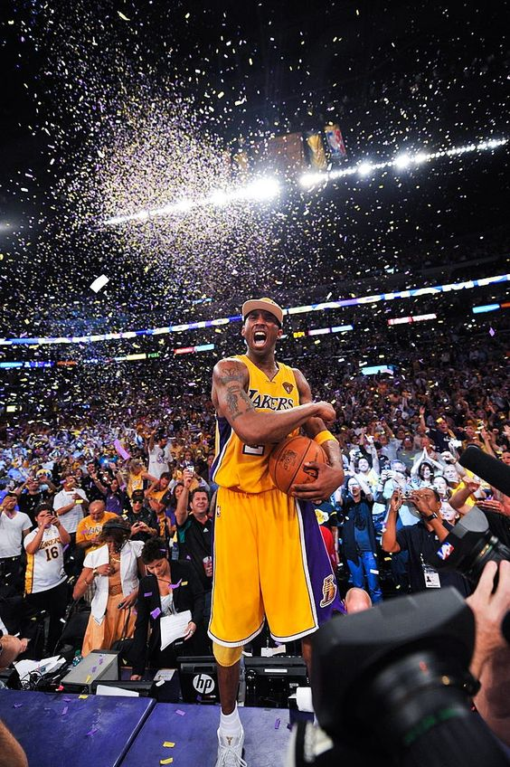
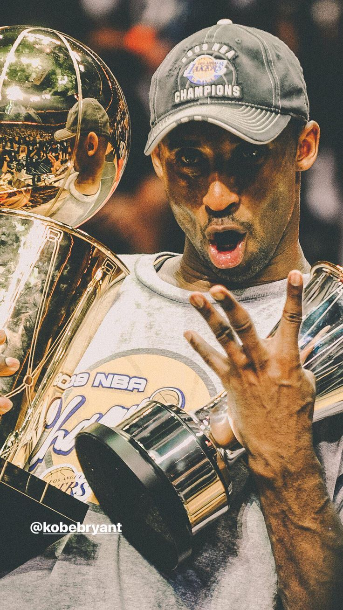

Introduction
Kobe Bryant, born August 23, 1978, in Philadelphia, Pennsylvania, was more than just a basketball player. He was a phenomenon, a fierce competitor, and a global icon whose impact transcended the sport. His life was a tapestry of triumphs, challenges, and an unwavering pursuit of greatness. This autobiography aims to capture the essence of Kobe Bryant, a man who embodied the spirit of the game and inspired millions around the world.
In 1996, I made the bold decision to enter the NBA Draft straight out of high school. Selected 13th overall by the Charlotte Hornets and then traded to the Los Angeles Lakers, I began my professional career with high expectations. My rookie season was a whirlwind, filled with challenges and learning experiences. By my second year, I was making a significant impact, and I went on to become one of the most iconic players in NBA history.
Over my 20-season career with the Lakers, I achieved incredible milestones: five NBA championships, 18 All-Star selections, and two NBA Finals MVP awards. I was known for my competitive spirit, work ethic, and versatility on the court. My signature "Mamba Mentality" became a symbol of relentless drive and resilience, influencing countless athletes and fans worldwide.
My career was not without its challenges. Injuries and setbacks tested my resolve, but each obstacle only fueled my desire to overcome and excel. The tragic loss of my daughter Gianna and seven others in a helicopter crash in January 2020 was a profound moment of grief for me and my family. Their memory continues to inspire me to live each day with purpose and passion.
My journey in basketball and life has been a remarkable adventure, marked by triumphs, challenges, and growth. Through it all, my love for the game and my commitment to excellence have defined my legacy. As I reflect on my life, I hope to be remembered not just for my achievements on the court, but for the impact I made as a person, a father, and a mentor.
Thank you for joining me on this journey.